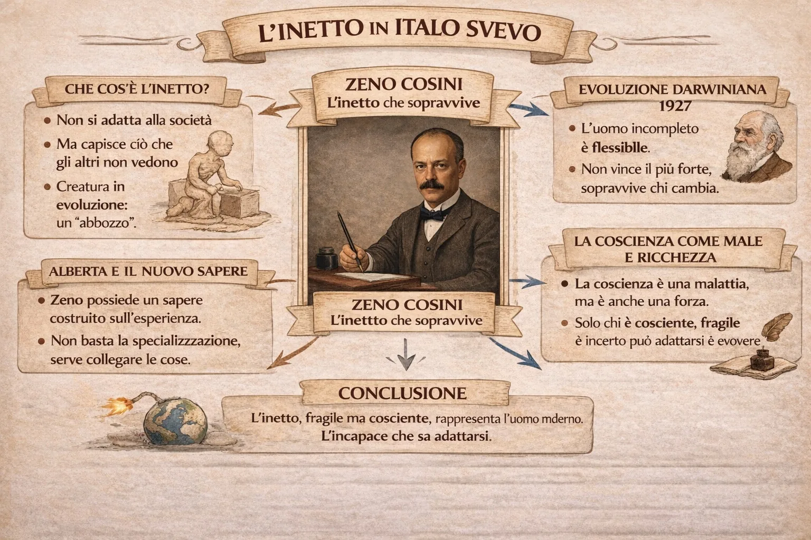

L’inetto come abbozzo dell’uomo futuro
Quando leggiamo i romanzi di Italo Svevo incontriamo spesso una figura particolare: l’inetto. A prima vista potrebbe sembrare semplicemente un uomo debole, incapace di agire o di avere successo nella vita. In realtà, per Svevo l’inetto è qualcosa di molto più complesso.
L’inetto è un individuo che non riesce ad adattarsi perfettamente alla società, ma proprio per questo possiede una qualità rara: la capacità di osservare, riflettere e mettere in dubbio ciò che gli altri accettano senza pensarci.
Nodi della lezione
- L’inetto non si adatta ma osserva meglio
- La fragilità diventa apertura all’evoluzione
- Zeno è l’abbozzo dell’uomo futuro
1. Introduzione
Quando leggiamo i romanzi di Italo Svevo incontriamo spesso una figura particolare: l’inetto. A prima vista potrebbe sembrare semplicemente un uomo debole, incapace di agire o di avere successo nella vita. In realtà, per Svevo l’inetto è qualcosa di molto più complesso.
L’inetto è un individuo che non riesce ad adattarsi perfettamente alla società, ma proprio per questo possiede una qualità rara: la capacità di osservare, riflettere e mettere in dubbio ciò che gli altri accettano senza pensarci.
Svevo definisce l’inetto come un “abbozzo”, cioè un essere umano non ancora finito, ancora in trasformazione.
2. L’inetto e l’evoluzione: il saggio “L’uomo e la teoria darwiniana”
Per capire meglio questa idea bisogna ricordare un breve saggio di Svevo intitolato L’uomo e la teoria darwiniana.
Secondo Charles Darwin, nella natura sopravvive chi è più forte e meglio adattato all’ambiente. Svevo però propone una riflessione diversa.
Secondo lui, l’uomo che ha più possibilità di evolversi non è quello perfettamente adattato, ma quello incompleto e aperto al cambiamento.
L’inetto, proprio perché non è rigido e definitivo, può trasformarsi quando il mondo cambia.
In altre parole, l’imperfezione diventa una possibilità di evoluzione.
3. Zeno Cosini: l’inetto nel romanzo
Zeno è un uomo indeciso, cambia continuamente idea, analizza ogni sua azione e spesso non riesce a prendere decisioni chiare.
Eppure, proprio questa sua instabilità lo rende più capace di adattarsi rispetto agli altri.
Nel romanzo, personaggi apparentemente più forti e sicuri, come Guido Speier, finiscono per fallire. Zeno invece sopravvive alle difficoltà della vita, attraversa la guerra e riesce perfino ad avere successo negli affari.
Per Svevo la "malattia" di Zeno non è solo un difetto: è anche una forma di conoscenza. Zeno è malato perché è cosciente, perché riflette continuamente su sé stesso e sul mondo.
4. Alberta Malfenti: un altro modo di conoscere
Nel romanzo compare anche Alberta Malfenti, una giovane donna molto colta.
A un certo punto dice a Zeno: “Senza saperlo sapete molte cose, mentre i miei professori sanno esattamente quello che sanno.”
Questa frase è molto importante, perché riconosce che Zeno possiede un tipo di conoscenza particolare.
Non è una conoscenza specialistica, come quella dei professori che sanno tutto di un argomento preciso. È invece una conoscenza più ampia, nata dall’esperienza e dall’osservazione della realtà.
Svevo anticipa così un’idea molto moderna: conoscere non significa solo accumulare informazioni, ma saper collegare le cose tra loro.
5. Il finale del romanzo: la civiltà malata
Nel finale della Coscienza di Zeno il protagonista immagina che l’uomo possa costruire un ordigno capace di distruggere l’intero pianeta.
Questa immagine è simbolica e molto moderna.
L’uomo, grazie alla tecnica, ha acquisito un potere enorme sulla natura. Ma proprio questo potere può trasformarsi in una minaccia.
Zeno, con la sua capacità di riflettere e mettere in dubbio il progresso, diventa un osservatore lucido della crisi della civiltà moderna.
6. La lettera del 1927: la malattia come ricchezza
In una lettera del 1927 Svevo scrive una frase molto significativa:
“Perché voler curare la nostra malattia? Davvero dobbiamo togliere all’umanità quello ch’essa ha di meglio?”
Qui la "malattia" non indica una vera patologia, ma la condizione dell’uomo moderno: il dubbio, l’inquietudine, la coscienza critica.
Secondo Svevo, togliere questa "malattia" significherebbe togliere all’uomo la sua profondità e la sua capacità di pensare.
7. Conclusione
Zeno Cosini non è un eroe tradizionale. Non è forte, sicuro o deciso.
È invece un uomo pieno di dubbi, contraddizioni e domande.
Ma proprio per questo rappresenta l’uomo moderno.
Per Svevo l’inetto non è semplicemente un fallito: è un essere umano aperto al cambiamento, capace di capire le contraddizioni della propria epoca.
La coscienza, anche quando è dolorosa, diventa così la vera forza dell’uomo.
Come leggere questa pagina
Prima guarda la mappa. Poi usa la sintesi per fissare i passaggi logici. Solo dopo apri la lezione completa: così il testo non ti cade addosso come un blocco unico, ma come sviluppo di un ordine già visto.
Indice rapido
Su iPad e iPhone: condividi la pagina e scegli “Aggiungi a Home”. Su Android: usa “Installa app”.